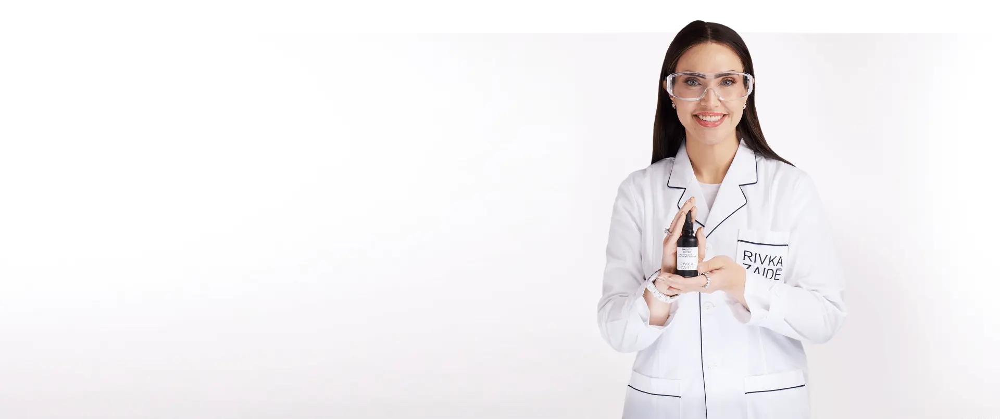

רואקוטן עוזר לרבים — אבל הוא מגיע עם מחיר: תופעות לוואי, בדיקות דם ומעקב רפואי צמוד. לפני שמתחילים תרופה כבדה, הגיוני לבדוק קודם את הדרך שאין לה תופעות לוואי — במיוחד כשהבדיקה חינם.
✔ האבחון לא סוגר לכם שום דלת — רואקוטן תמיד יישאר אופציה
רואקוטן (איזוטרטינואין) היא תרופה יעילה שנרשמת על ידי רופאי עור למקרי אקנה בינונית עד קשה, ובמקרים רבים היא אכן פותרת את הבעיה. אנחנו לא כאן כדי להפחיד אתכם ממנה — ההחלטה על טיפול תרופתי היא שלכם ושל הרופא/ה שלכם בלבד.
אנחנו כאן כדי להגיד דבר אחד פשוט: יש סדר נכון לבדוק דברים. כשקיימת דרך טבעית, ללא תרופות וללא תופעות לוואי, שכבר עבדה לעשרות אלפי ישראלים — הגיוני לבדוק אותה לפני שמתחייבים לחודשים של טיפול תרופתי. במיוחד כשהבדיקה לא עולה כלום.

| 💊 רואקוטן (איזוטרטינואין) | 🌿 השיטה של רבקה זיידה | |
|---|---|---|
| מה זה? | תרופה במרשם — נגזרת ויטמין A שמצמצמת ייצור חלב (סבום) בעור | טיפול טבעי משולב: פוטותרפיה ב-5 אורכי גל + תכשירים צמחיים ממעבדה בתקן ISO/GMP |
| תופעות לוואי | שכיחות: יובש קיצוני בעור ובשפתיים, רגישות לשמש; מחייבת מעקב רפואי ובדיקות דם, ואסורה בהיריון | ללא תרופות וללא תופעות לוואי — טיפול חיצוני, עדין וללא כאב |
| מעקב רפואי | בדיקות דם תקופתיות ומעקב רופא/ת עור לאורך כל הטיפול | ליווי אישי של מומחית אקנה — בלי בדיקות דם ובלי מרשמים |
| התאמה אישית | מינון לפי משקל ופרוטוקול רפואי | תוכנית אישית שנבנית באבחון לפי סוג העור, חומרת האקנה ואורח החיים שלכם |
| טיפול בצלקות ובסימנים | אינו מטפל בצלקות קיימות | מסלול ייעודי לפוסט-אקנה וצלקות בטכנולוגיית RF מתקדמת, מתאים גם לגווני עור כהים |
| העלות של לגלות אם זה מתאים | ביקור רופא, מרשם והתחלת טיפול | אבחון ראשון חינם לחלוטין — כולל תוכנית ומחיר מדויק, ללא התחייבות |
* המידע על רואקוטן מבוסס על מידע רפואי פומבי ואינו מהווה ייעוץ רפואי. כל החלטה על טיפול תרופתי — בהתייעצות עם רופא/ה בלבד.
מומחית אקנה בודקת את העור שלכם ואומרת לכם ביושר אם השיטה מתאימה למקרה שלכם — ומה בדיוק התוכנית והמחיר.
יוצאים עם אבחון מקצועי, תוכנית מסודרת ומספר מדויק. עכשיו יש לכם באמת את כל המידע להשוות בין הדרכים.
מתאים? מתחילים לטפל בלי תרופות. לא מתאים? רואקוטן נשאר על השולחן — ולא הפסדתם כלום. תרתי משמע.
"כבר היה לי מרשם לרואקוטן ביד. חברה שכנעה אותי לנסוע לאבחון בבני ברק 'רק לשמוע'. חצי שנה אחרי — עור נקי, בלי כדור אחד ובלי בדיקות דם. המרשם עדיין במגירה."
[שם המטופל/ת] · הגיע/ה מ[עיר]
לעוד סיפורים כאלה ←ללא עלות. ללא התחייבות. ורואקוטן? יישאר אופציה בדיוק כמו שהיה.